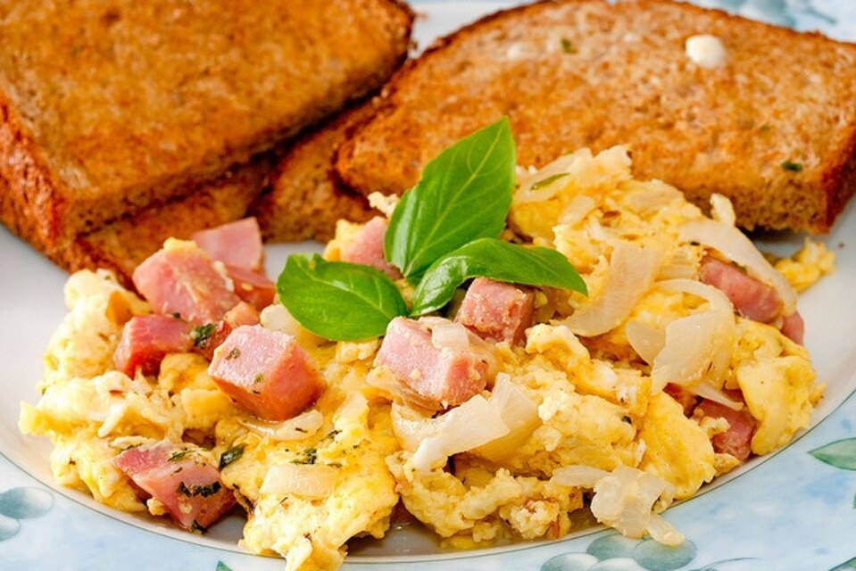

¿CÓMO HACER HUEVOS CON JAMÓN?
Un buen desayuno es importante para comenzar el día

Ingredientes:
- Huevos
- Jamón
- Aceite
- Complementos (ya sean champiñones, chiles, jitomates, etc, todo al gusto)
- Sal
Modo de preparación:
- Colocar el sarten a calentar con el aceite
- Picar entrozos el jamón con los complemetos que desee
- Una vez que el aceite haya llegado a la temperatura adecuada, agregar los complementos
- Despues de cocinarlos a fuego medio por unos minutos agregar el huevo
- Mientras se agrega el huevo comenzar a mezclar todo con sal al gusto
- Seguir revolviendo los huevos junto con los demas ingredientes hasta que comiencen a tener la consistencia deseada
- Servir y comer
LISTO, ¡AHORA TENEMOS UNOS DELICIOSOS HUEVOS!